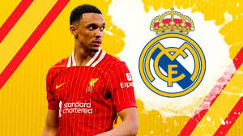

MANAGING MADRID PODCAST: HOW WOULD TRENT ALEXANDER-ARNOLD FIT AT REAL MADRID?
In this episode, the team dives deep into how Liverpool's star right-back, Trent Alexander-Arnold, could fit into Real Madrid’s system. The discussion covers his unique playmaking abilities, his versatility in different formations, and how he might adapt to La Liga’s style of play. Would he operate as an attacking full-back in Madrid's current setup, or would his role evolve to complement their tactical approach? Tune in to explore how his dynamic skillset could reshape Real Madrid’s defense and attack!
On this Members-only episode of the Managing Madrid Podcast, Kiyan Sobhani and Matt Wiltse discuss:
- How possible is it that TAA arrives to Real Madrid: 1. next season; or 2. this winter
- How would he fit tactically?
- What would this team look like with two offensive full-backs like TAA and Alphonso Davies?
- Defensive coverage
- His dynamic with Fede Valverde
- And much more, including Raphael Varane’s latest quotes
Managing Madrid is a hub for all Madridistas with updated news, op-eds, tactical analyses, artwork, and of course, podcasts. It also serves as a means for Real Madrid fans to connect and discuss the team. Your contributions will allow us to continue to produce podcasts for you.
The site is run by a small team that works tirelessly around the clock to make it into what it is today. Your support is invaluable in maintaining this website and its podcasts.